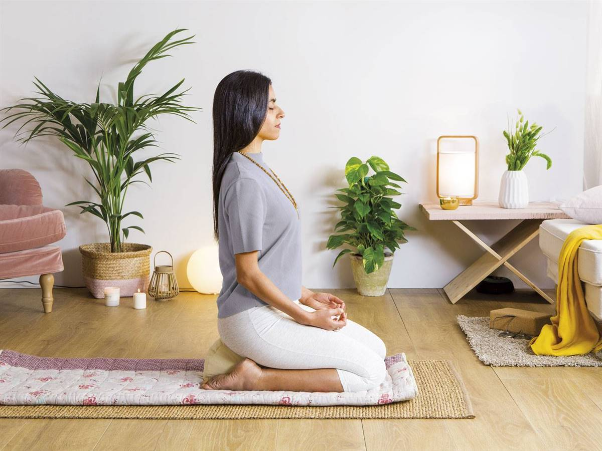
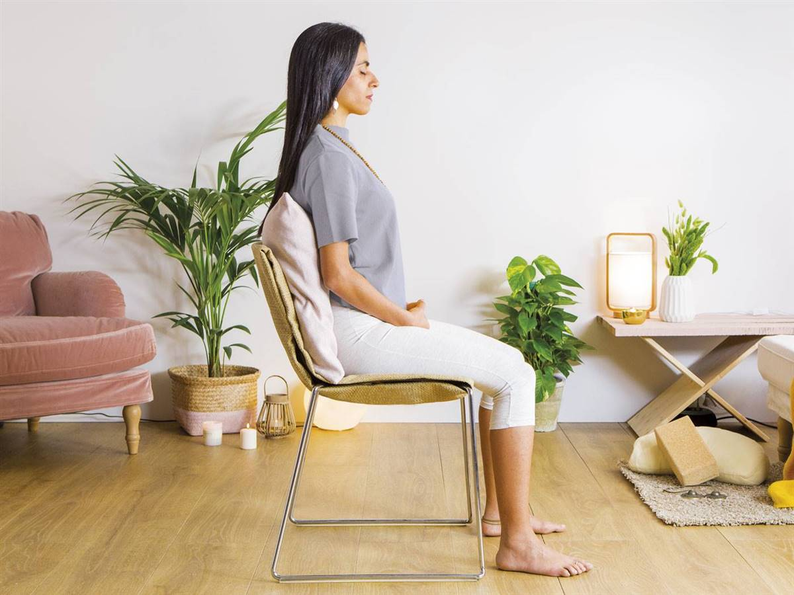
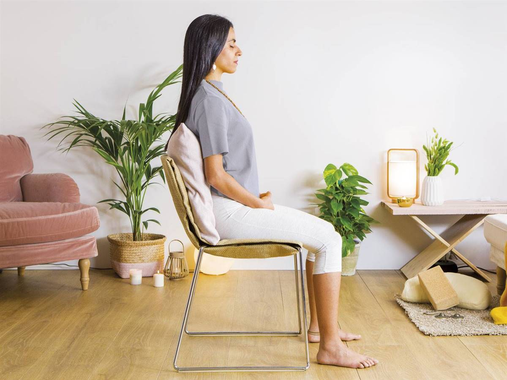
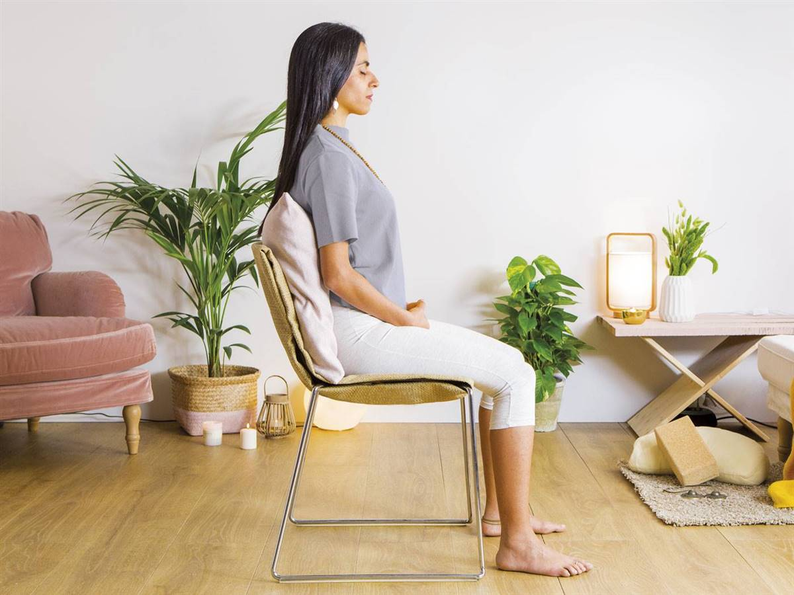
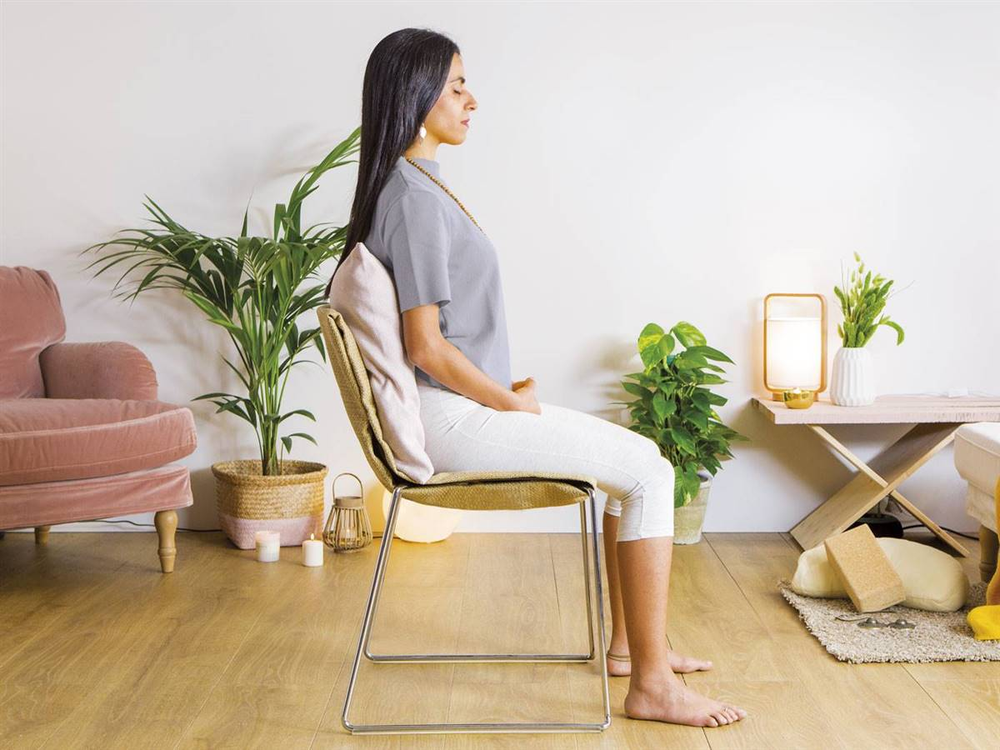

Mejores posiciones para meditar


 



Meditar es ir hacia dentro volver a nuestro hogar , ayuda a mantenerse en el presente , relajar la mente y lograr una mayor concentración , entre multiples beneficios .
Meditar no es tener la mente en blanco : Seguramente al intentar meditar por primera vez , muchos pensamientos los van a invadir , no hay que luchar con ellos , ni juzgarlos , simplemnete dejar que pasen observarlos y concentrarnos en la respiración , en un sonido y relajar. Volver la meditación parte de nuestra rutina, ayuda a tener una vida equilibrada . Vamos a intentarlo?
A continuación les dejo unas meditaciones guiadas de corto tiempo para realizar diariamente , la repetición de una accion se vuelve habito .
Elegir un lugar comodo , tranquilo , ubicar nuestro cuerpo de manera recta , cerrar los ojos , respirar lentamente y a disfrutar!!
